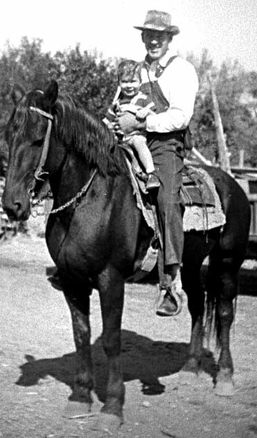

... hands of faith, hard work and love ...
The Story of Forrest D Buchanan
7 March 1918 - 28 February 1980
Compiled by Joseph Forrest Buchanan
The Story of Forrest Buchanan
We walked together along the road to church, my small four-year-old hand in his giant hand, my steps trying to keep up with his huge strides. This memory has always been there to encourage me onward through life. Through it I know that I have a father who is strong, wise and caring. He only was there for me until a short time after I started my own adventure as a father, but I know that he still watches over me. Above all, he showed me through his life, example and humble teaching that I have a Heavenly Father who is also strong, wise and caring, and that as we try in our own meager way to live our lives, our divine father is watching over us, ready to pick us up when we fall and always ready to take our hands and walk with us through adversity as well as happy times, regardless of where our own tiny feet have taken us. This story is of Forrest's life and of the impressions he etched into my life.
Though I always called him Daddy or Dad, I will refer to him in this history by his name.
Note: In these files, a few names and dates have been obscured for privacy reasons
Next: Part 1: Beginnings in Venice until Mission to New England
Part 2: Mission to New England
Part 3: Marriage and Family
Part 4:About LIfe, Health, Humor, Love
Appendix A - Life Timeline
Appendix B - Histories and journals
Appendix C - Mission Journal
Appendix D - Recipes